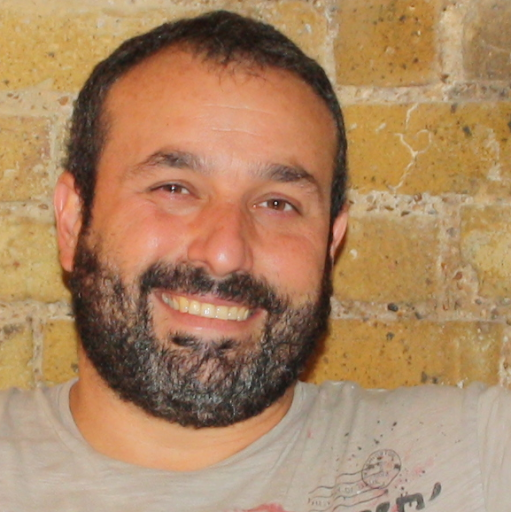

Oscar Worgenchaffe Garcia
Team Manager
Producción
CPV


Team Manager
Producción
CPV


Actualmente desarrollo mi carrera profesional en el sector de la construcción, concretamente en la producción de cemento, liderando uno de los equipos que trabajamos a turno en la fábrica y mantenmos su funcionamiento las 24 horas del día los 7 días de la semana.
Mi relación con las IT nació desde pequeño aunque donde más lo pude disfrutar fue hace muuuuuchos años mientras estudiaba la ingeniería. Solo pude aprender programación en C, C++ y Visual Basic, lenguajes no tan vistosos como el desarrollo de aplicaciones en Android (en el que ya he podido hacer alguna incursión gracias a Eclipse.
| Introducción a Linux como entorno de desarrollo de sistemas software. |
| HP-UNIX |